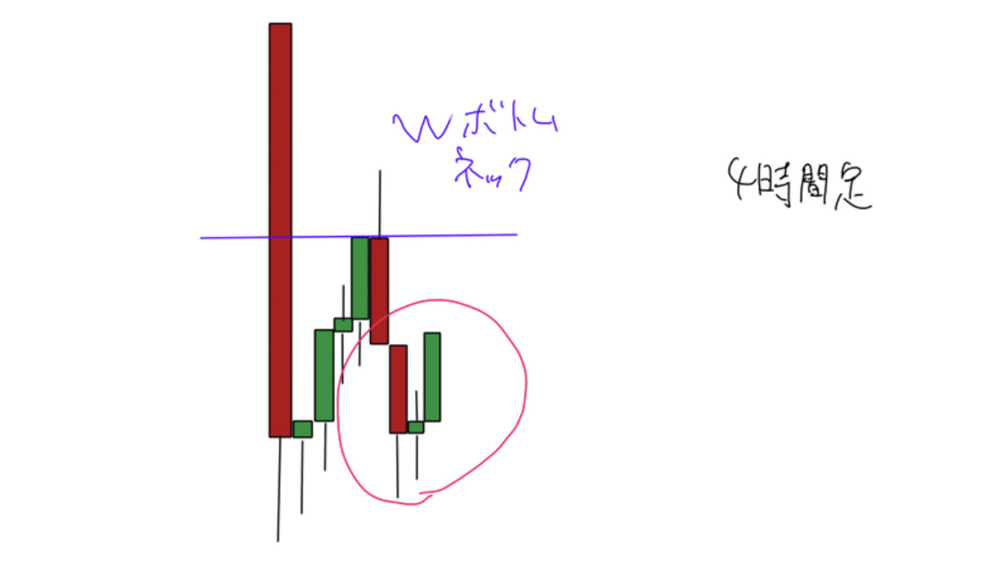

ローソク足の分析2
------------------------------------------------------------------------------------------
ローソク足の分析1の続編です。1を読んで無くて2を見て意味が分からないとか言われても知りません。読んでない人は下を先に読んでから進んで下さい👇

今回はポジり方メインに作ってます。
結論から書くと、自分のローソク足トレードで1番簡単に勝つ方法はざっくり4つです。
終値に向かってポジションを取る
次のローソク足の色を予測
足更新でポジションを取る(中途半端な時間にポジションを取らない)
その終値で閉じた場合の上位足を考える(マルチタイムフレーム)
自分はこれしか考えていません。なので今回はこの4つのテーマについて解説していき、出来るだけ実際のトレードでポジションを組み易いように書いていきます。
それと自分は15分足で反転の判断をしているので基本15分足のことだと思って見てください。
大前提でローソク足の分析1のチャートパターンや特徴的なムーブは理解している前提での話になります


-------------終値に向かってポジションを取る(次のローソク足の色を予測)--------------
難しいと思うかもしれませんが意外と簡単で、レンジ内で実体が揃っているところを探し、そこでリバればチャートパターンが完成する場所を探します。まず実体が揃っている判定のところから説明します。
理想的なのは左のような図です。ある程度実体の幅があるかつ、実体が揃っている場所ですね。
逆に右の図は実体は揃ってますが実体の幅が薄いので信頼度は低いということになります。
この実体の厚みに関しては、相場次第でボラティリティ(ざっくり変動幅)が違うので何ドル幅、何円幅と定義付けるのは不可能なので御了承ください。
この実体の厚み＝リバの強さと自分は判断しています。
そもそも本当にここが安値圏ならば、ショートカバー(ショートの利確)と新規ロングが入って来るので、リバは強く、ローソク足も強気に確定するはずなんですよね。
なのでこの場合だと、画像の左じゃないとロングしません。
これを踏まえてどうポジションを取るかなんですが、端的にいうとインサイドバーを意識しています。
インサイドバーっていうのはこういうやつです↓
見ての通り前回ローソク足の高値安値を更新せずに次のローソク足を確定させるローソク足のことです。
右のローソク足が左のローソク足のインサイドバーでそのまた左がインサイドバーで、、、
っていうパターンですね。これを細かく分解してみるとこうです。
これが
こう。では重ねて見ましょうか。
ちょっとは分かりやすくなったと思います。左は逆三尊、右は持ち合いです。
この場合逆三尊の方だけポジションを取るのでポジションの取り方の解説に移ります。
自分の場合は逆三尊になってからポジションを取るのではなく、ここでリバったら逆三尊になる位置でポジションを取るので、こういう場所で取ります。
これが
こう確定するイメージで拾うわけです。(slというのはストップのことです) つまりインサイドバーを継続する仮定かつ、損切りも明確な安値がある場合に通用するやり方です。
逆にインサイドしているローソク足の本数が1本しか無かったり、チャートパターンが出来ていない時にポジションを取るのは根拠が雰囲気しか無いので厳禁です。
slの位置については基本逆三尊の左肩に置きたいのですが、右肩下がりの逆三尊や右肩上がりの逆三尊の場合ズレが生じるので、損切り貧乏にならないようにトップに置くのが安定します。
ただ、ボラティリティの高い金融商品は遠くにストップを置くとロットが積めない問題があるので、自分が安値からかなり遠いと感じる場合は左肩にしてエントリーし直したりと工夫しましょう。
ざっと説明したこのポジションの取り方が全ての基本になります。
チャートパターン毎にこのポジションの取り方が出来るものと出来ないものがあるので、やり易いチャートパターンだけ◎して説明を書いておきます。↓
基本的にフラッグと三角形のチャートパターンは端っこでは無く、トレンド中の押し目で出る事が多いのでブレイクで取るスタイルです。なのでバツ×。他のチャートパターンは上位足(4時間で見ると楽)でここで反発したらこうなるなっていう場所で同じ事をします。
ダブルボトムを例にしてみますね。↓
(ローソク足の本数が100%足りて無いけどイメージなので許してください。)
ちょっとイメージ湧いてきましたかね。ここでさっきのやり方でロングするだけです。
とにかく実体が揃って反発が強い場所を探すのがポイントです。
・手順としては
1.ローソク足実体が揃ってる場所を探す(15m以上で)
↓
2.反発が強いかどうか確認する
↓
3.チャートパターンが出来そうか確認する
↓
4.実際にエントリー
になります。時間軸もっと短くてもいいんですが、その分確度が落ちるので注意してください。
次のテーマにいきます。
-----------------------------次のローソク足の色を予測する------------------------------
陰線と陽線2つしか無いのに何言ってるんだ?となるかもしれませんが、陰線になる確率と陽線になる確率は50%:50%じゃ無いんですよね。体感70%:30%くらいの比率に傾く場面があります。
1番簡単な例で言うと、暴落後の爆リバは誰がどう見てもめちゃくちゃリバるやつです
それはさておき、とりあえず色予測は2種類あります。
- 1.ちょっと乗り遅れて後乗りで突っ込んでもひとまず利益にはなるパターン
- 2.レンジやまったり目の反転の時
自分はこの2種類だと思うので、解説していきます。
1.後乗りで間に合うパターン
先に画像を出すとこういう場所です。
線チャートで解説するとこんな感じ。
一定の下げ幅の下落の後に、急角度の打ち込みがあった後のリバです。
これの底を指値でキャッチ!!みたいな事が出来たらカッコ良いのですけどそう上手くいくはずもなく
リスクを冒す必要もないので1分足に切り替えて最後の戻り高値を抜けた後に突っ込むイメージです。
更新タイミングによるのですが、こういうリバの初動は5分足や15分足で連続陽線を形成する可能性がかなり高く、上位足確定タイミングでエントリーポイントが下髭になっている事が多いです。
これを意識するだけで少なくとも浅いところからショートはしないようになるはずなので意識して下さい
次行きます。
2.レンジやまったり目の反転の時
これは《終値に向かってポジションを取ると》かなり重複する部分があるのですが、例えば↓
ここから始値を付けたとすると陰線陽線陰線？の並びになりますがイメージとしてはこんな感じです↓
この場合ロングとショートの綱引きで定位置に帰っちゃう可能性が高いと見ます。
この場合、次は陽線で読みます。但し、損切りは絶対安値に置きます。これは絶対なので必ず守ってください。但しここで弱いチャートパターンが出現している場合、読みが陽線でも潰される可能性が高いのでロングはせず様子見or値幅が取れそうなら実体高値を背にショートを打っていくイメージです。
まあその時点で陰線読みなんですけどね。
基本この読みの連続でチャート形成に付いていく訳なのですが、流石にこればかりはスポーツと同じで教科書見ただけでその動作が出来る様にはならないので、もう少し具体例を挙げて役に立つようにします。
需要あるのはヒゲキャッチかそれが出来なかった時の押し目買いだと思うので、押し目買いをローソク足の観点から説明します。
例えばこういうチャートでロング出来なかったとしましょう。
この場合、次は逆三尊のネック付近からロングを狙っていく訳ですが、基本皆さんどこで買うかって発想になると思うんですよね。自分はどの状態で買うかを意識しています。
みんな見てるのはこんな感じだと思います。↓
ではここから陰線陽線を読んだ上でどう立ち回るかですが、反転する前提の展開だと2パターンあります
パターン1、押し目ありターゲット到達。
パターン2、押し目無しターゲット到達。
パターン2の方は仮に買いたい場所に来たとしても上位足で見た時にダブルボトムかややこしい系のチャートパターンになる事が多いのでパターン1のみ解説します。ややこしい系の画像↓
という訳でパターン1前提の解説に入ります。2枚画像を貼ります。↓
微妙に違うのですが、1枚目の画像と2枚目の画像は髭をつける位置が1段違います。
またサポートを深く試しますが、実体の確定位置はどちらの画像も押し目です。
右から2番目の陰線を付けに来ている段階で拾うと、場所関係なくかなり不安になると思います。(押しが深いので)目線をロング固定と仮定しているのでこの場合だと下髭陰線の後に陽線が並ぶと読みます。
その場合に、1枚目の場合、1番新しいローソク足からロングを入れ始めるイメージです。
2枚目の場合、1番新しいローソク足から見て1本前のローソク足の安値を背に陽線読みで買っていくイメージです。難しいとは思いますが意識しながらトレードすると取れるようになると思います。
この画像で1番意識しないといけないのは青ボックスのローソク足実体群よりも最新のローソク足が高い位置で確定するか低い位置(実体内)で確定するかどうかです。印象が全く違うので必ず意識して下さい。
ここまで記述した2つのテーマを意識するだけで大分変わると思います。次行きます。
----------足更新でポジションを取る(中途半端な時間にポジションを取らない)-----------
これが自分の中では、1番簡単に意識出来て1番重要かもしれません。
簡潔に言うと時計見ろって事です。養分の人と勝ってるけど大して勝ててない人に1番意識して欲しいです
特に5分の刻みでポジションを取るようにしてください。
どういう事かというと、例えばロングしたいなぁと思うサポートまで落ちて来るとするじゃないですか。そういう時に7分とかだとすると10分まで待つ、12分とかだと15分まで待つという事です。
画像にするとこうです。↓
こういう風に連続陰線で暴落してるとして、そろそろ止まりそうだと感じたとしましょう。
下落幅が大きければ大きいほどリバも強いので端っこを取りたくなる気持ちは分かりますし、取れた時の気持ち良さは最高なんですが(超分かる)、値幅が大きい程雰囲気トレードは大損します。
例えば↓
この左右の画像で違うのは4分の時間差だけです。
ここからリバを狙うとするのであれば次の15分が陽線になる必要があります。
値動きの勢いが強ければ強いほど連続陰線(陽線)で確定しやすいので、11分にロングを取った場合15分更新まで4分もあります。4分もあるということは、それだけヒゲが潰されて確定する可能性があります。
逆に14分にポジションを取って15分で反転する読みの場合は1分しか待たなくて済みますし、値幅によりますがきっちりした反転をする場合は更新前に買っても建値に帰って来る可能性が低く、強めにリバってくれる事がほとんどです。
イメージ↓
理想はこういう感じです。
自分の場合は自分がポジションを取った位置で反転しない場合センスの無いポジションだと思っているので、slは更新前の直近安値に置く事がほとんどです。
絶対そこに置く必要はありませんが必ず置いてくださいね。(当たり前)
ここまでは比較的簡単に理解出来ると思うのですが、この方法で取ったポジションを何時まで握れるかというのも同時に考える必要があります。というか自分は考えてるので共有します。
例えば先程の画像の場合15時14分にポジションを取っているので、6時間更新の直後です。
基本的に1分よりも5分、5分よりも15分、15分よりも30分、、、というように上位足の陰線陽線を気にしますが、先程の画像の場合日足等々は置いておいて、13時更新の4時間足は確実に大陰線です。
こういう事です。↓
6時間足が陽線になったとて、4時間足が陽転する可能性はかなり低く、4時間足の重さに負ける可能性が高い訳です。これをさっきの応用で考えると、この4時間での上昇の上値は限られており、狙うとするのならば21時までの次の4時間陽線を狙った17時ロングになります。つまり上位足の更新タイミングで4時間足と6時間足の色を揃えられるタイミングで買った方がストレス無く握れるという事です。
画像にするとこんな感じ。↓
これがロング取った段階の比較。
これで17時前。
こんなイメージですね。
もっと短期足で見たら横軸調整って感じになります。こういう風に何時に取ったポジションはローソク足の確定位置に合わせてtpと到達時間、見てるストレスを考えて組むのが自分は好きです。
今回の例の場合、結局15時15分で買っても17時付近で買っても取れる値幅は大して変わらないのですが時間効率が違います(チャート見てなくて他の仕事してる人は別)。自分の場合トレードも労働と一緒で時間の切り売りだと思ってるのでこういうやり方でポジションを作っています。
特に月初は月次の背が欲しいので頑張ります。
ここまでしっかり身に付けるだけでも確実に負けにくくなるので頑張って下さい。勿論確定位置によってパターンは無限にあるのでこの形だからこうなるというわけではないです。可能性が高いだけです。
では最後の項目に移ります。
------------その終値で閉じた場合の上位足を考える(マルチタイムフレーム)-------------
これまでのまとめみたいなもんです。
今まで解説した内容を全部同時に出来ると、勝手にマルチタイムフレームが出来るようになります。
- 終値に向かってポジションを取る
- 次のローソク足の色を予測
- 足更新でポジションを取る(中途半端な時間にポジションを取らない)
- その終値で閉じた場合の上位足を考える(マルチタイムフレーム)
今回のテーマを複合して解説します。
出来るだけ分かりやすいように、色毎に番号振っておきました。
1でエントリー又は2紫ゾーンでローソク足更新エントリー。
3ゾーンの終値予測。
- 終値に向かってポジションを取る
- 次のローソク足の色を予測
- 足更新でポジションを取る
これで各テーマを複合的にエントリー使うイメージが少しは湧いたと思います。
問題はマルチタイムフレームです。
ここまでの内容を理解出来ている人は結構相場触ってる人が多いので経験があると思うのですが
良いところでエントリー出来たのにこんなに伸びると思わなかった。って経験があると思うんです。
上位足の環境認識が出来ていればそんな事にはなりづらいので、難しいですがついて来てください
序盤で出した画像ですが、この時、短期のtpに来た時の上位足を考えます。例えばですが
短期足レベルのtpに来た時の4時間足の状況が↑だとした時に

上位足がこういう状況だとすると、4時間足レベルのダブルボトムを取ってる可能性が高まります。
逆に
4時間レベルでダブルボトムを取っていてもさらに上位足がこういう状況だと落ち握れない可能性
(建て値に帰って来るor損切りされる)が高まります。
なので常に上位足でどういうチャートパターンを作っているのか、この位置で確定した場合上位足はどこで確定するのか。これを必ず意識して下さい。これに加えて、何時にどの辺で上位足が閉じたら次のローソク足は何色になりそうか、というのも常に考えるクセを付けてください。
例えば
しっかり自分の時間軸以外の上位足も見ていれば、こういう日足レベルのダブルボトムを4時間足レベルで見て、15分足の反転で拾って日足レベルで握るってトレードも出来るようになります。
以上の4つのテーマに関しては、全部大事で、最低限これだけをマスターしておけばローソク足だけでもトレードが出来るようになると思います。
これに付随して、自身の使っているインジケーターと組み合わせたり、ご自分使いやすいように工夫して下さい。ちなみにインジケーターの殆どは、ローソク足から数値を引っ張って来て、それを終値確定で線にしたりしているので、極めたら消してても問題ないですし、むしろ邪魔になると思います。
解説は以上です。
------------おまけ(ビットコイン限定)(指数フライヤーは見た事ないので)-------------
イナゴの見方、逆張りする時の特徴をおまけで付けときます。
イナゴってざっくりいうとこんな感じの波なんですよ。
上下の3kっていうのは適当な数値です。これに関しては直近の出来高や成り行き量に対しての比率を大体暗記しておかないといけないと思っているので適当な数値で描いてあります。
暗記無理だわって人は諦めてください。無理ならやらない方がいいので。
このピークぽい箇所で最後のツッコミロングorショートが入った後に反対ポジをぶつけてくる奴がいます
この辺ですね。
チャート的に言うとこの辺で反射的にポジションを取っていれば、ローソク足確定時に髭になる事が多いです。多いだけなのでもちろん速攻でリバ潰しに来ることもあります。
そこは慣れて下さい。bFの全盛期なんかはこれだけで勝てたんですが今は無理ゲーなので、自分はcbが起きるようなボラがある時ないし利確の時に使っています。
特にツッコミのポジションに利確をぶつける事が出来るようになれば、髭利確が出来るようになるので、よっぽどモチベーションがある人は練習するといいと思います。
以上おまけでした。